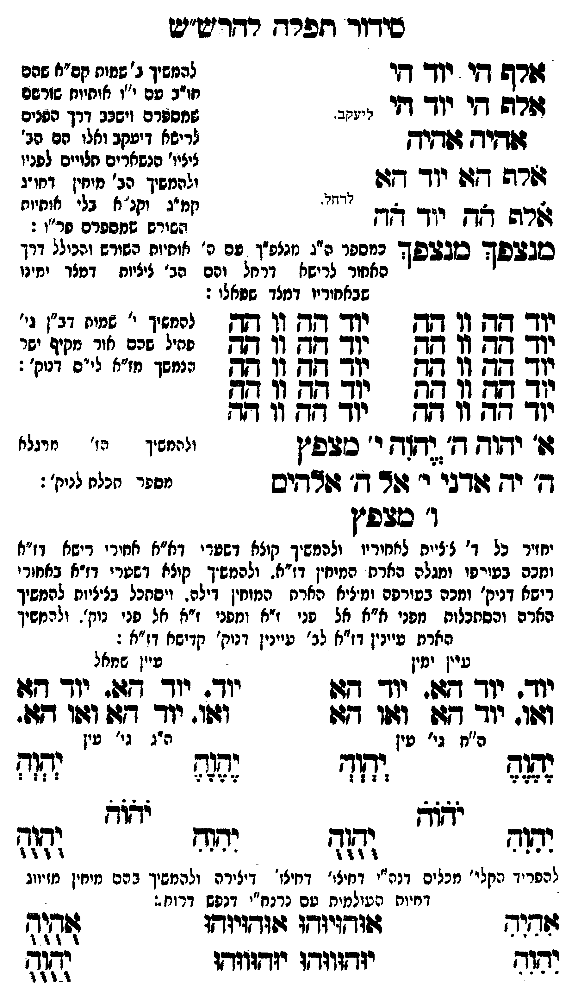

Neue Klartextfassung
אלף הי יוד הי אלף הי יוד הי [ליעקב.] אהיה אהיה אלף הא יוד הא [לרחל.] אלף הה יוד הה [להמשיך ב' שמות קס"א שהם חו"ב עם י"ו אותיות שורשם שמספרם ויסבב דרך הפנים לרישא דיעקב ואלו הם הב' ציצי' הנשארים תלויים לפניו ולהמשיך הב' מוחין דחו"ג קמ"ג וקנ"א בלי אותיות השורש שמספרם פר"ו:] מנצפך מנצפך [כמספר ה"ג מנצפ"ך עם ה' אותיות השורש והכולל דרך אחור לרישא דרחל והם הב' ציציות דמצד ימינו שבאחוריו דמצד שמאלו:] === טבלה === יוד הה וו הה יוד הה וו הה יוד הה וו הה יוד הה וו הה יוד הה וו הה יוד הה וו הה יוד הה וו הה יוד הה וו הה יוד הה וו הה יוד הה וו הה === סוף טבלה === [להמשיך י' שמות דב"ן גי' פתיל שהם אור מקיף ישר הנמשך מז"א לי"ס דנוק':] א' יהוה ה' יהוה י' מצפץ ה' יה אדני י' אל ה' אלהים ו' מצפץ [ולהמשיך הז' מרגלא מספר תכלא לנוק':] [יחזיר כל ד' ציצית לאחוריו ולהמשיך קוצא דשערי דא"א אחורי רישא דז"א ומכה בעורפו ומגלה הארת המוחין דז"א. ולהמשיך קוצא דשערי דז"א באחורי רישא דנוק' ומכה בעורפה ומגלה הארת המוחין דילה. ויסתכל בציציות להמשיך הארה והסתכלות מפני א"א אל פני ז"א ומפני ז"א אל פני נוק'. ולהמשיך הארת עיינין דז"א לב' עיינין דנוק' קדישא דז"א:] === טבלה === [עין ימין] יוד. יוד הא. יוד הא ואו. יוד הא ואו הא [עין שמאל] יוד. יוד הא. יוד הא ואו. יוד הא ואו הא === סוף טבלה === [ה"ח גי' עין] יהוה יהוה יֹהֹוֹהֹ יהוה יהוה [ה"ג גי' עין] יהוה יהוה יֹהֹוֹהֹ יהוה יהוה [להפריד הקלי' מכלים דנה"י דחיצו' דחיצו' דיצירה ולהמשיך בהם מוחין מזיווג דחיות העולמות עם נרנח"י דנפש דרוח:] === טבלה === [טור ימין] אִהִיִהִ יִהִוִהִ [טור אמצעי] אוּהוּיוּהוּ אוּהוּיוּהוּ יוּהוּווּהוּ יוּהוּווּהוּ [טור שמאל] אֻהֻיֻהֻ יֻהֻוֻהֻ === סוף טבלה ===
Original gegen neue OCR · Niqqud für Vergleich ausgeblendet
Original
אלף הי יוד הי אלף הי יוד הי [ליעקב.] אהיה אהיה אלף הא יוד הא [לרחל.] אלף הה יוד הה [להמשיך ב' שמות קס"אK121-001 שהם חו"ב עםK121-002 י"ו אותיות שורשם שמספרם ויסבבK121-003 דרך הפנים ∅K121-004 לרישא דיעקב ואלו הם הב' ציצי'K121-005 הנשארים תלוייםK121-006 לפניו ∅K121-007 ולהמשיך הב' מוחין דחו"ג קמ"ג וקנ"א בלי אותיות השורש שמספרם פר"ו:] מנצפך מנצפך [כמספרK121-008 ה"ג מנצפ"ך עםK121-009 ה' אותיות השורש והכוללK121-010 דרך אחורK121-011 לרישא דרחל והםK121-012 הב' ציציות דמצדK121-013 ימינו שבאחוריו דמצד שמאלו:] === טבלה === יוד הה וו הה יוד הה וו הה יוד הה וו הה יוד הה וו הה יוד הה וו הה יוד הה וו הה יוד הה וו הה יוד הה וו הה יוד הה וו הה יוד הה וו הה === סוף טבלה === [להמשיךK121-014 י' שמותK121-015 דב"ן גי' פתיל שהם אורK121-016 מקיף ישר ∅K121-017 הנמשך מז"אK121-018 לי"ס דנוק':] א' יהוה ה' יהוהK121-019 י' מצפץ ה' יה אדני י' אל ה' אלהיםK121-020 ו' מצפץ [ולהמשיך הז' מרגלא מספר תכלא לנוק':] [יחזירK121-021 כל ד' ציציתK121-022 לאחוריו ולהמשיך קוצא דשעריK121-023 דא"א אחוריK121-024 רישא דז"א ומכה בעורפוK121-025 ומגלה הארת המוחיןK121-026 דז"א. ולהמשיך קוצא דשעריK121-027 דז"א באחורי רישא דנוק' ומכה בעורפה ומגלה הארתK121-028 המוחין דילה. ויסתכלK121-029 בציציות להמשיך הארה והסתכלות מפניK121-030 א"א אל פני ז"א ומפני ז"א אל פני נוק'. ולהמשיך הארת עיינין דז"א לב' עיינין דנוק' קדישא דז"א:] === טבלה === [עין ימין] יוד. יוד הא. יוד הא ואו. יוד הא ואו הא [עין שמאל] יוד. יוד הא. יוד הא ואו. יוד הא ואו הא === סוף טבלה === [ה"חK121-031 גי' עין] יהוה יהוה יהוה יהוה יהוה [ה"גK121-032 גי' עין] יהוה יהוה יהוה יהוה יהוה [להפרידK121-033 הקלי' מכלים דנה"י דחיצו' דחיצו'K121-034 דיצירה ולהמשיך בהם מוחיןK121-035 מזיווג דחיות העולמות עםK121-036 נרנח"י דנפש דרוח:] === טבלה === [טור ימין] אהיה יהוה [טור אמצעי] אוהויוהו אוהויוהו יוהוווהו יוהוווהו [טור שמאל] אהיה יהוה === סוף טבלה ===K121-037
OCR · fehlbar
סידור תפרח רדריש"יע ורש שי יך -י להמשיך ג" שמוח קס"חK121-001 שהם חו"ב טםK121-002 י"ו אוחיוח שזרשם זרה די יוד דזי י. י זחספרם וישכבK121-003 דרך הפנים ג[[יך זפד(יךK121-004 לרישא דיעקב ואלו הם הב' ל ציציו'K121-005 הנשארים חלוייםK121-006 לפניו גרה דז: יוך דגד - .K121-007 ולהמשיך הב' מיין דחו'ו ג 2 2 דאת. ש " י' אותי שרה אד יוד צד ז זג((ז[(צייל זא " סגעפד סבבפך כמספרK121-008 ה"ג נזנצפ"ך פםK121-009 ה' אותיות השורש והכיללK121-010 דרך האחורK121-011 לרישא דרחל ורםK121-012 הב' ציציות דטצדK121-013 ימינו שבאחוריו דמצד שטאלו : גג[ שק ג1 זח נך ח ג1 21 להמגיךK121-014 י' שמוחK121-015 דב"ן גי' נך [0ף 11 בח עד שש (1 ש יחיל שכס אודK121-016 מקיף ישר נן[- [0ף 7 חח 2(- ח ג- ([-K121-017 הנמשך מ"אK121-018 לי"ס דנוח': תב תק (- 71 קג אק (ג [ש יוד' גד: וו חח יו דד וו דז 7ד' יחוק ץ' (גדזך ו' כבפ"ן והמשיך מז' מיגלא ד' יד ודביK121-019 י' ור ד' גזרדיס י0:י חנלז יז':K121-020 ו' טבפ"ן יחזירK121-021 כל ד' צצייחK121-022 לאחוריו ולהמשיך קוצא דשפדיK121-023 דא"א אחיריK121-024 רישא דז"א וזכה בעירפוK121-025 ומגלה הארת המיחיןK121-026 דז"א. ולהמשיך. קיצא דשטריK121-027 דז"א באחורי רישא דניק' וחכה בפורפה ימציא הארחK121-028 המוחין דילה ' ויסחכלK121-029 בציציות להמשיך הארה והסתכלות גפניK121-030 א"א אל פני ז"א ומפני ז"א אל פני נוק'. ולהמשיך הארת עיינין דז"א לב' עיינין דנוק' קדישא דז"א : עיין ימין עיין שמאל יוד: יודך גגו. יך דזו יוך : יוך ד(. יוך- דזו וזווג יודך 9477 1041 דזו וגוו. יוךך דזו ו4פו דזזו. ה"חK121-031 גי' עין היגK121-032 גי' עין נגד ישיש (0ז: זנ( יזזא ישוח דזק[ח דת[ דק(זש ווש( 2330 ששל -- "". 3322 להפרידK121-033 הקלי' מכלים דנה"י דחיצי' דחיצז'K121-034 דיצירה ולהמשיך בהם מיחיןK121-035 מזיווג דחיוח העולמית טםK121-036 נרנח"י דנפש דרוח .: שדוד וזודזיזדו 4(זדזיודו ז[ וש( יזודווודו יזדווזדד ללK121-037